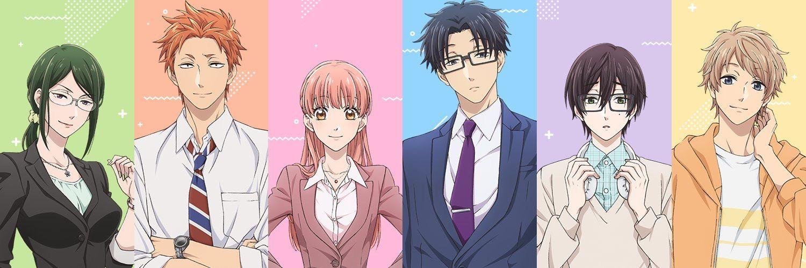
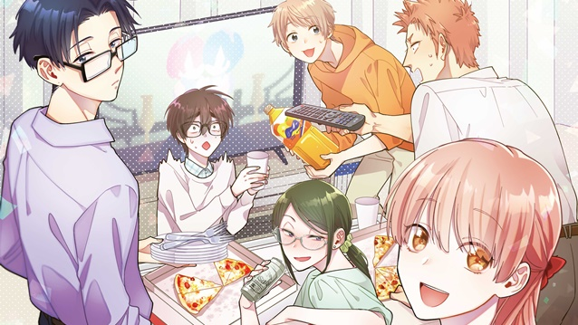

WOTAKOI
O amor é difícil para otakus
Wotaku ni Koi wa Muzukashii (ou de forma abreviada, Wotakoi) conta a história de Narumi, uma funcionária de um escritório que tenta esconder seus hobbies dos colegas de trabalho. Sendo um pouco mais específica, ela é uma otaku obsessiva por animes e mangás yaoi – uma perfeita fujoshi. Em seu último trabalho, os colegas descobriram sobre seus interesses e começaram a evitá-la, e até seu relacionamento amoroso desmoronou por causa disso. Agora em um novo emprego, Narumi reencontra Hirotaka, um amigo de infância viciado em jogos, que não tenta esconder seu jeito nerd. Depois de ouvir a garota falar sobre sua desastrosa vida amorosa, Hirotaka chama Narumi para um encontro. O que poderia dar errado com dois nerds obsessivos namorando, né?
PERSONAGENS
- HANAKO KOYANAGI
- é a senpai de Narumi Momose no escritório, ela é secretamente uma famosa cosplayer otaku que geralmente faz cosplay de personagens masculinos. Ela também joga e lê mangá yaoi . Hanako é casada com Tarou Kabakura.
- TARÕ KABAKURA
- Tarou é colega de trabalho de Hirotaka Nifuji no escritório,É um otaku menos intenso; ele gosta de heróis e bishojo. Tarou é Casado com Hanako Koyanagi.
- NARUMI MOMOSE
- Narumi é um fujoshi otaku, que também gosta de jogos otome e ídolos. Ela culpa ser um otaku pelas dificuldades em sua vida e tenta manter isso em segredo, especialmente no trabalho. Ela também é amiga de infância e namorada de Hirotaka Nifuji.
- HIROTAKA NiFUJI
- Hirotaka é o amigo e namorado otaku de Narumi Momose, que é apaixonado por ela desde a infância. Hirotaka é um otaku gamer que passa a maior parte de seu tempo livre jogando e ao contrário de Narumi, ele não se importa se todos sabem que ele é um otaku. Ele também é considerado muito atraente pelas mulheres, embora não pareça se importar.
- KO SAKURAGI
- Kō é um jogador solo socialmente ansioso da universidade de Naoya com o hábito de dizer "me desculpe". A natureza reclusa de Kō inicialmente lembra Naoya de seu irmão e, assim, decidiu se tornar o amigo jogador de Kō. Naoya a traz para seu grupo de amigos - não percebendo que ela é mulher até mais tarde.
- NAOYA NIFUJI
- Naoya é o irmão mais novo alegre de Hirotaka; um estudante universitário. Naoya se preocupa profundamente com seu irmão e silenciosamente se preocupa com ele e sua natureza introvertida. Ao contrário de seu irmão, Naoya não é um otaku e é muito ruim em videogames.
-
